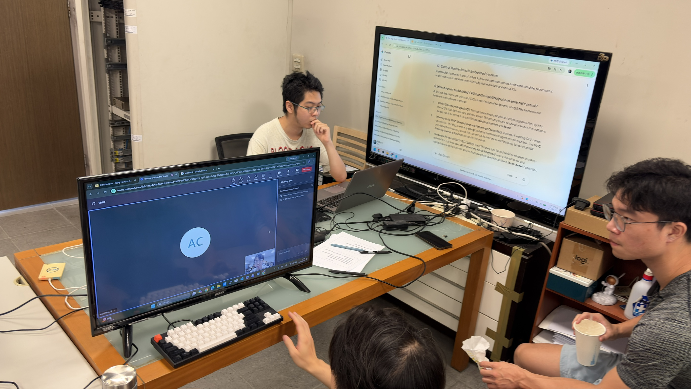
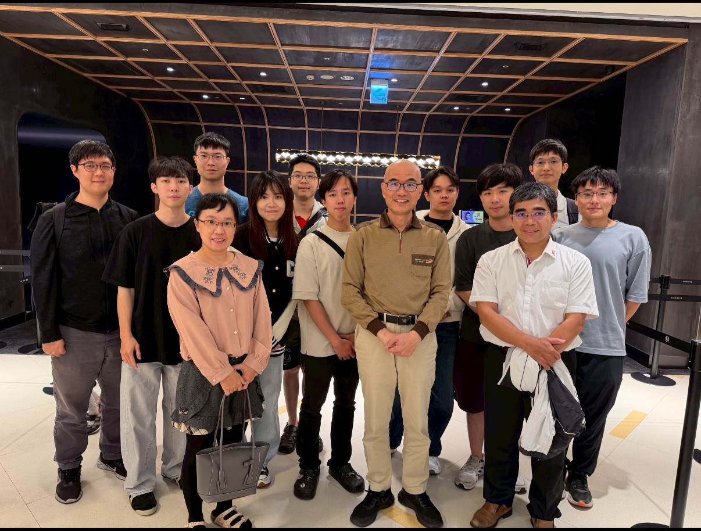

以人工智慧為核心，將機器學習與深度學習技術落實於真實場域。 我們打造可落地的 AI 解決方案，並與產業攜手推動創新。
本實驗室致力於人工智慧（AI）技術之研發與應用，專注於將機器學習與深度學習技術落實於實際場域。
近年來，實驗室積極投入 AI 專案開發，並與業界公司合作推動產學合作計畫，包含 行動應用程式（App）開發、資料分析平台設計，強調技術落地與產業實務接軌， 提升學生實作能力與產業競爭力。
歡迎有程式設計專長的同學加入我們，也歡迎有興趣、肯吃苦的同學一起探索深度學習應用的領域！
機器學習與深度學習模型之研發，從演算法設計到實際場域部署。
無線通訊、行動計算與感測技術，建構無所不在的智慧感知系統。
資料分析平台與雲端服務設計，支撐大規模 AI 應用落地。

